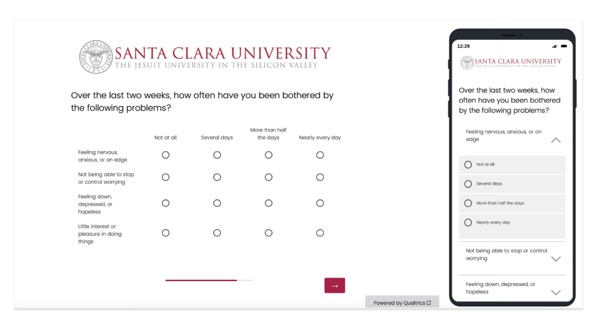

Understand the responses
Use SPSS to turn collected feedback into a structured analysis.
Santa Clara University · Research & project management
I managed the work from stakeholder alignment through design, launch, analysis, and reporting—then documented a process the university could use again.

What changed
Launched SCU’s first-ever Pulse Survey and established a repeatable framework for systematically tracking student topics, wellness, and experience over time.
01 / Initiate · Scope & align
SCU needed a faster, more consistent way to understand student concerns between larger survey efforts.
I started with stakeholder meetings to define the scope and align the needs of faculty and institutional research. The first survey focused on belonging and mental wellbeing, while the wider project needed a structure for listening over time.
A focused first survey and a shared purpose for future pulse research.
Collect the topics and concerns stakeholders want to understand.
Bring those needs into a focused research plan.
Respect students’ time while gathering useful feedback.
02 / Plan · Design the survey
I created a question-bank system where professors and faculty could submit questions, and designed the questionnaire for the initial launch. This connected ongoing stakeholder input with a focused first survey.
The survey targeted belonging and mental wellbeing. The question bank created a place for additional topics that could inform later cycles.
I designed around 12 or fewer questions and a 1–5 minute completion window, balancing stakeholder information needs with participant time.
Validated items from PHQ-4 and NSSE supported benchmarking and consistency across the research framework.
A draft questionnaire and a reusable system for collecting faculty questions.
03 / Prepare · Review & coordinate
I hosted a pre-launch meeting to present the survey structure and draft. Alongside the questionnaire, I coordinated an administration plan covering timing, distribution, and reminders.
| Workstream | What I coordinated |
|---|---|
| Stakeholder review | A pre-launch discussion of the survey structure and draft. |
| Timing & audience | A planned Week 4 launch in Spring 2024, distributed to undergraduate students by email. |
| Communication | Pre-announcements and reminders as part of the administration plan. |
| Participant experience | A brief instrument with clear consent and confidentiality information. |
A reviewed survey draft and an administration plan for launch.
04 / Execute · Launch & coordinate
I launched the survey and coordinated the research workflow. The first pulse reached undergraduate students through email, putting the new listening process into practice.
SCU’s first-ever Pulse Survey, with a coordinated process for collecting responses.
05 / Evaluate · Analyze & communicate
I analyzed responses in SPSS, created visualizations in Tableau, and shared findings with institutional stakeholders and on the SCU website.
Use SPSS to turn collected feedback into a structured analysis.
Use Tableau to communicate findings visually.
Report to institutional partners and publish findings on the university website.
Analysis, visualizations, and reporting that helped faculty and institutional research understand student experience.
06 / Handoff · Document & repeat
I documented a repeatable protocol covering survey design, administration, analysis, and reporting. Together with the question bank, it gave the university a structure for systematically tracking student topics over time.
Project outcome
A first launch and a reusable research framework. The project created a foundation for future pulse surveys and ongoing understanding of student wellness and experience.
Question bank and topic-selection structure.
Survey, distribution, analysis, and reporting protocol.
Recommendations for A/B testing and expanding to additional audiences.
The framework was designed to support future quarterly surveys. Expansion to graduate students, faculty, and staff, as well as A/B testing, were recommendations for later work.
What I learned
Leading this initiative strengthened my ability to connect scope, stakeholder needs, participant time, and delivery. A useful research program needs both a sound instrument and a process people can carry forward.
A good conversation is a good start
I’m exploring UX research opportunities, and related roles in product insights, customer experience, and strategy.